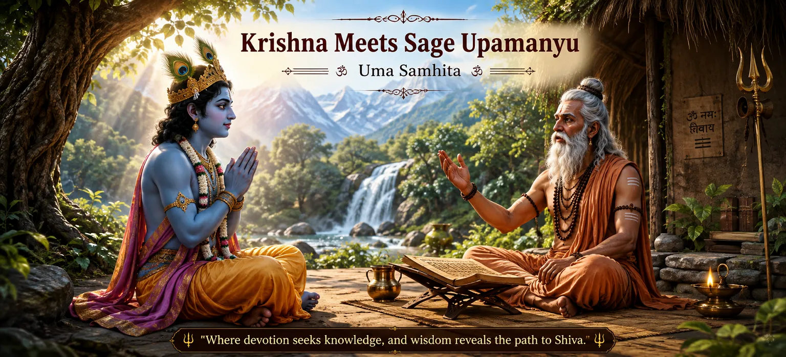

Krishna Meets Sage Upamanyu
The first chapter of Uma Samhita opens with a meditation on Lord Shiva, described as the perfect divine reality who supports, creates and dissolves the worlds while remaining beyond the three gunas and the power of Maya. The sages then ask Suta to narrate the sacred story of Shiva accompanied by Uma. The teaching is presented through a respected chain of transmission, moving from Suta to Sanatkumara and then to the account of Krishna's meeting with Sage Upamanyu.
Krishna comes to Kailasa because he wishes to perform penance to please Shiva and seek the blessing of a son. There he finds Upamanyu, a great devotee engaged in austerity. Krishna bows before the sage, joins his palms and asks him to explain the greatness of Shiva so that he may undertake his own penance with devotion and proper understanding.
Upamanyu responds by recalling what he himself witnessed during his penance. He describes Shiva in overwhelming majesty, surrounded by divine weapons, gods, sages, Ganas and attendants. He also remembers the moment when Shiva tested his devotion, accepted his steadfastness and offered him whatever blessing he desired. The chapter therefore establishes a central pattern that will continue through Uma Samhita: sincere aspiration leads to disciplined practice, and steadfast devotion becomes the ground upon which divine grace is received.
Chapter 1 at a Glance
Sacred Text
The opening chapter of Uma Samhita in the Shiva Purana.
Chapter
Chapter 1, centred on Krishna's meeting with Sage Upamanyu.
Sacred Setting
Kailasa, the sacred mountain associated with Lord Shiva.
The Seeker
Krishna approaches Upamanyu with humility and asks for guidance before beginning his penance.
The Sage
Upamanyu shares what he personally witnessed through his penance and devotion to Shiva.
Central Theme
Steady devotion, disciplined penance, divine vision and Shiva's compassionate grace.
Contents of This Chapter
- 01 The Opening Meditation on Shiva →
- 02 The Sacred Lineage of the Teaching →
- 03 Krishna Travels to Kailasa →
- 04 Krishna Meets Sage Upamanyu →
- 05 Upamanyu's Vision of Shiva →
- 06 The Divine Weapons of Shiva →
- 07 The Divine Assembly Around Shiva →
- 08 Shiva Tests Upamanyu's Devotion →
- 09 The Boons Granted to Upamanyu →
- 10 Upamanyu's Guidance to Krishna →
The Opening Meditation on Shiva
Uma Samhita begins by turning the mind toward Shiva as the perfect divine reality. The opening meditation presents him as the one who supports the worlds, brings creation into manifestation and presides over dissolution. The three gunas are associated with these cosmic functions, yet Shiva himself is described as standing beyond Maya and beyond the limitations imposed by those qualities.
The chapter therefore establishes an important distinction between Shiva's cosmic activity and Shiva's transcendent nature. The Lord may be spoken of through the functions of creation, preservation and dissolution, but the meditation points toward a reality that is not confined to any one function. Shiva is described in terms of truth, bliss and pure consciousness.
This opening is significant because the narrative that follows is not simply a story about a powerful deity. Krishna is preparing to approach the very Lord whom the chapter first presents as the transcendent foundation of existence. His later request for guidance must therefore be understood within this larger vision of Shiva.
The Sacred Lineage of the Teaching
The sages address Suta with respect and ask him to narrate the sacred story of Shiva accompanied by Uma. Their request shows that the narrative is being received as sacred teaching rather than ordinary entertainment. They approach the storyteller as disciples and listeners who wish to hear a divine account capable of bringing both worldly benefit and spiritual good.
Suta explains that the same sacred inquiry had already been carried through an honoured chain of teachers. Vyasa had asked Sanatkumara about Shiva, and Sanatkumara now recounts what Upamanyu had taught Krishna. The layered narration gives the chapter a strong sense of continuity. Sacred knowledge is heard, remembered and passed onward through teachers and sincere listeners.
This transmission also prepares the reader to understand Upamanyu's authority. He is not introduced merely as someone who has heard stories about Shiva. He speaks about what he personally experienced during his own penance. His account therefore becomes a testimony that Krishna receives before undertaking his own spiritual discipline.
Krishna Travels to Kailasa
The narrative then moves to Krishna, the son of Vasudeva. Krishna travels to Kailasa, the sacred abode associated with Shiva, because he wishes to perform penance in order to please the Lord and seek the blessing of a son. His purpose is clearly stated, and the chapter presents him as a seeker preparing himself for disciplined worship.
Krishna's position makes his humility especially meaningful. He is already a revered divine figure, yet he approaches a sage with respect and asks for instruction. The chapter does not portray spiritual greatness as a reason to reject guidance. Instead, Krishna's conduct shows that sincere seekers honour those who have walked the path before them.
Before beginning penance, Krishna wants to hear about Shiva's greatness. This detail is important. The chapter places understanding before practice. Krishna does not simply rush into austerity. He first seeks to know the Lord whom he intends to worship and asks an experienced devotee to guide him.
Krishna Meets Sage Upamanyu
At Kailasa, Krishna sees Sage Upamanyu engaged in penance on the excellent mountain summit. Krishna approaches him with devotion, bows before him and joins his palms in reverence. His first action is not to demand an answer but to honour the sage.
Krishna then explains why he has come. He wishes to perform penance to Shiva for the blessing of a son, and he asks Upamanyu to describe the greatness of Shiva. He wants to hear the account because hearing sacred greatness strengthens devotion and prepares the mind for worship.
Upamanyu is pleased by Krishna's request. He addresses Krishna as a great devotee of Shiva and agrees to describe what he himself witnessed. The sage's answer therefore begins not with a theoretical definition but with experience. He has undergone penance, seen Shiva and received the Lord's grace.
Upamanyu's Vision of Shiva
Upamanyu recalls that during his penance he witnessed Shiva in a form of extraordinary majesty. The description is intentionally immense. Shiva is presented with overwhelming radiance, numerous eyes and feet, immense power and terrifying splendour. The imagery communicates a reality that cannot be confined to an ordinary human scale.
The vision also connects Shiva with the power of cosmic dissolution. Upamanyu describes the Lord as one whose power can bring the universe to an end at the close of a cosmic age. The imagery is not merely intended to frighten. It establishes Shiva as a power beyond the ordinary limits of creation and destruction.
Yet Upamanyu's response to this overwhelming vision is devotion. He does not describe himself as becoming the equal of the Lord. Instead, he becomes filled with wonder, joins his hands and worships Shiva with hymns. The greater the vision becomes, the deeper his humility becomes.
The Divine Weapons of Shiva
Upamanyu's vision includes many divine weapons associated with Shiva and the other great powers present in the assembly. Among the most striking is the trident, described as a supreme weapon capable of overcoming other weapons and missiles. The chapter associates it with extraordinary destructive force and recalls several legendary uses of the weapon.
Upamanyu also sees the axe associated with Shiva and recalls its connection with Parashurama. He describes the Sudarshana discus, the thunderbolt, the Pinaka bow, arrows, the Shakti, sword, noose, goad and great club. These weapons create a vision of divine power in which no destructive force is beyond the Lord's authority.
The chapter's purpose is not to turn the sacred vision into a simple catalogue of weapons. Their presence reinforces the majesty and sovereignty of Shiva. They show that the Lord who grants a devotee's prayer is also portrayed as the power capable of governing forces that shape the universe.
The Divine Assembly Around Shiva
Upamanyu's vision does not show Shiva in isolation. Brahma is present in his celestial vehicle, while Narayana stands with the conch, discus and mace upon Garuda. Manus, sages, Indra and other gods are also present. Skanda stands near the Goddess with his Shakti and bell, while Nandin stands before Shiva holding the trident.
The Ganas, divine mothers and other attendants are also gathered around the Lord. The gods surround Shiva and praise him with hymns. Upamanyu is struck by the completeness of the scene and compares the experience to witnessing a great sacred sacrifice.
This assembly gives the vision a cosmic dimension. Shiva is not presented merely as a deity who grants one person's request. The chapter places him at the centre of an immense divine gathering, while the seeker stands before him in reverence. The personal and cosmic dimensions of devotion therefore meet in a single scene.
Shiva Tests Upamanyu's Devotion
After Upamanyu worships Shiva, the Lord addresses him with affection. Shiva tells him that Upamanyu has remained unshaken even though he has been tested repeatedly. This statement reveals that the sage's devotion has been examined under pressure rather than accepted merely on the basis of words.
Shiva then declares that he is pleased with Upamanyu and invites him to choose a boon. The Lord's words convey the extraordinary openness of divine grace. Even something considered rare or difficult to obtain is not beyond Shiva's ability to grant when he is pleased with the devotee.
The chapter places great importance on steadiness. Upamanyu's devotion is not described as a passing emotion. It has endured difficulty and testing. When Shiva finally responds, his grace recognises the quality that has already been demonstrated through the sage's conduct.
The Boons Granted to Upamanyu
Upamanyu's requests reveal what he values most. He asks that, if Shiva is pleased and his devotion is truly firm, his knowledge may extend to the past, present and future. More importantly, he asks for devotion that never turns away from Shiva.
His requests also include the welfare of his household. He asks that he and his family receive milk pudding each day, that Shiva remain present in his hermitage and that his friendship with Shiva's other devotees continue forever. These requests show that his devotion is not detached from ordinary responsibilities and relationships.
Shiva responds with a series of generous blessings. He grants Upamanyu freedom from old age and death, fulfilment of his desires, honour among sages, fame, good conduct, beauty, good qualities and prosperity. Shiva also promises that the milk ocean will be present wherever Upamanyu wishes.
Shiva further assures Upamanyu that his family line will endure, that he will remain present in the hermitage and that the sage's devotion will remain permanent. Most intimate of all is Shiva's promise that whenever Upamanyu remembers him, he will appear before him. The chapter ends this part of the narrative by showing how divine grace transforms steadfast devotion into an enduring relationship with the Lord.
Upamanyu's Guidance to Krishna
After describing his experience, Upamanyu tells Krishna that he truly witnessed Shiva accompanied by his divine followers. He also points to the beauty and abundance surrounding his hermitage, treating these as signs of Shiva's grace. His words make clear that the blessings he enjoys are not understood as independent achievements. He attributes them to the favour of the Trident-bearing Lord.
Upamanyu also declares that through Shiva's grace he possesses knowledge of the past, present and future. He describes Shiva as the Lord who knows the principles of reality and who stands as the master of Prakriti and Purusha. Shiva is further presented as the source of Brahma and Vishnu and as the power behind creation, dissolution and the passage of cosmic time.
The chapter closes with a direct instruction to Krishna: he should propitiate Shiva for the fulfilment of his desire for a son. The advice brings the entire chapter back to its starting point. Krishna came to Kailasa seeking a blessing, but before beginning his own penance he has received a deeper lesson about devotion, discipline, divine greatness and grace.
Six Spiritual Lessons from Chapter 1
Seek Guidance with Humility
Krishna approaches Upamanyu respectfully before beginning his spiritual practice.
Prepare Through Discipline
Upamanyu's experience shows the importance of sustained penance and spiritual discipline.
Remember the Greatness of Shiva
Hearing about Shiva's greatness becomes part of Krishna's preparation for worship.
Remain Steady Under Testing
Shiva praises Upamanyu because repeated testing could not shake his devotion.
Let Devotion Shape Your Desires
Upamanyu asks for lasting devotion along with knowledge, household welfare and good spiritual companionship.
Trust in Divine Grace
Shiva's response shows how steadfast devotion is met with compassionate divine favour.
Spiritual Reflection
Chapter 1 invites the reader to look carefully at the way Krishna begins his spiritual undertaking. He does not begin with pride or impatience. He goes to a sacred place, approaches an experienced devotee, bows with respect and asks to hear about Shiva before beginning his own penance. Upamanyu then shows what sustained devotion can lead to: direct spiritual experience, divine grace and a relationship with Shiva that remains alive through remembrance. The chapter encourages a seeker to combine sincere desire with humility, discipline and devotion.
Bringing Chapter 1 into Daily Life
Krishna's example offers a simple principle for beginning an important undertaking: seek understanding before action. When a decision carries spiritual, family or personal importance, pause before acting and ask whether the purpose is clear. Guidance from a trustworthy and experienced person can prevent enthusiasm from becoming confusion.
Upamanyu's conduct also encourages steadiness. Devotion is not measured only by moments of enthusiasm. It becomes meaningful when it remains present through difficulty, uncertainty and delay. At the same time, steadiness should be joined with wisdom. The chapter does not ask the reader to pursue suffering for its own sake; it presents disciplined devotion as purposeful spiritual effort.
Finally, Upamanyu's prayers suggest a balanced approach to devotion. He asks for knowledge and lasting devotion, but he also remembers family welfare, the presence of Shiva in his hermitage and friendship with fellow devotees. Spiritual life therefore does not have to reject every responsibility. Devotion can become the centre around which knowledge, relationships and daily responsibilities are organised.
Key Names and Ideas
The seeker who travels to Kailasa to undertake penance to Shiva.
The devoted sage who guides Krishna and recounts his vision of Shiva.
The supreme Lord whose greatness and grace form the centre of the chapter.
The sacred mountain where Krishna meets Upamanyu.
Disciplined spiritual penance undertaken to please Shiva.
Shiva's compassionate response to Upamanyu's steadfast devotion.
Chapter Summary
Uma Samhita Chapter 1 opens with meditation upon Shiva and a request from the sages to hear the sacred story of Shiva accompanied by Uma. Through the teaching lineage of Suta, Sanatkumara and Vyasa, the narrative reaches Krishna, who travels to Kailasa to perform penance to Shiva for the blessing of a son. Krishna meets Sage Upamanyu, bows before him and asks to hear about Shiva's greatness. Upamanyu then recounts his own vision of Shiva, describing the Lord's overwhelming majesty, divine weapons, gods, sages, Ganas and attendants. Shiva recognises Upamanyu's steadfast devotion, offers him a boon and grants blessings including enduring devotion, prosperity, freedom from old age and death, divine presence in his hermitage and the promise to appear whenever remembered. Upamanyu finally directs Krishna to propitiate Shiva. The chapter therefore establishes devotion, disciplined penance, humility and divine grace as the foundation of the sacred narrative.
Frequently Asked Questions
① Why does Krishna go to Kailasa?
Krishna goes to Kailasa to perform penance and worship Shiva with the desire to receive the blessing of a son. Before beginning his austerity, he seeks guidance from Sage Upamanyu.
② Who does Krishna meet at Kailasa?
Krishna meets Sage Upamanyu, who is engaged in penance at Kailasa. Krishna bows to him and asks him to describe the greatness of Shiva.
③ What did Upamanyu see during his penance?
Upamanyu describes a majestic vision of Shiva surrounded by divine weapons, Brahma, Narayana, Skanda, Nandin, sages, gods, Ganas and divine mothers. The vision reveals Shiva in overwhelming cosmic splendour.
④ Why does Upamanyu describe Shiva's weapons?
The weapons emphasise Shiva's extraordinary authority and power. The chapter names the trident, axe, Sudarshana discus, thunderbolt, Pinaka bow, Shakti, sword, noose, goad and club among the divine weapons seen by Upamanyu.
⑤ What boons does Shiva grant Upamanyu?
Shiva grants Upamanyu freedom from old age and death, fulfilment of desires, honour among sages, fame, good conduct, beauty, good qualities and prosperity. He also promises the presence of the milk ocean where desired, an enduring family line, his continued presence in the hermitage and his appearance whenever Upamanyu remembers him.
⑥ What is the main lesson of Chapter 1?
The chapter teaches that sincere spiritual aspiration should be accompanied by humility, disciplined practice, respect for experienced guidance and steady devotion. Upamanyu's experience further shows the connection between steadfast devotion and Shiva's compassionate grace.
“Approach the Divine with humility, remain steady in devotion, and let sincere remembrance become the path through which grace enters the heart.”
Continue Through Uma Samhita
Chapter 1 introduces the sacred teaching through the meeting of Krishna and Sage Upamanyu. Krishna's request, Upamanyu's account of Shiva's vision and the blessings granted by Shiva establish the devotional foundation for the chapters that follow.